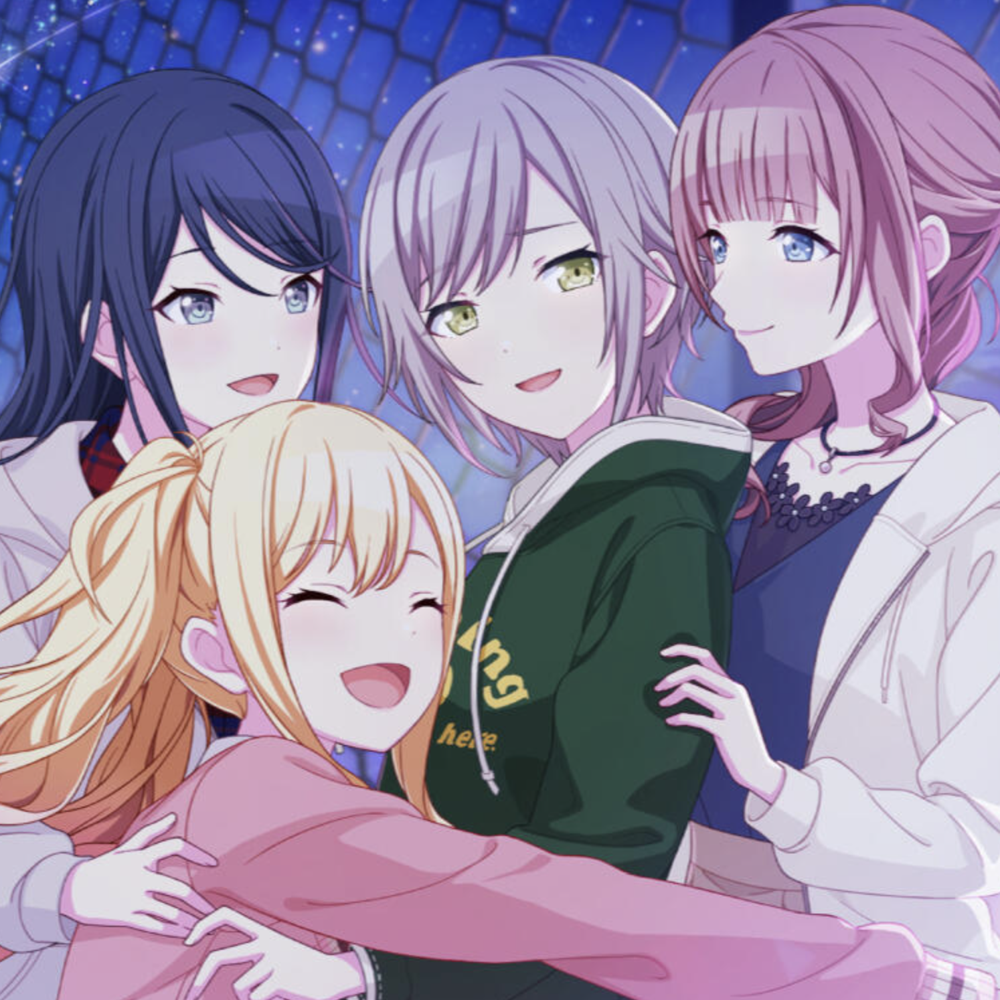
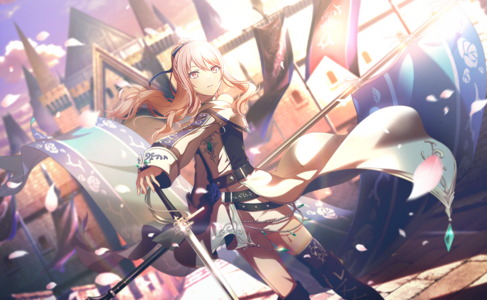
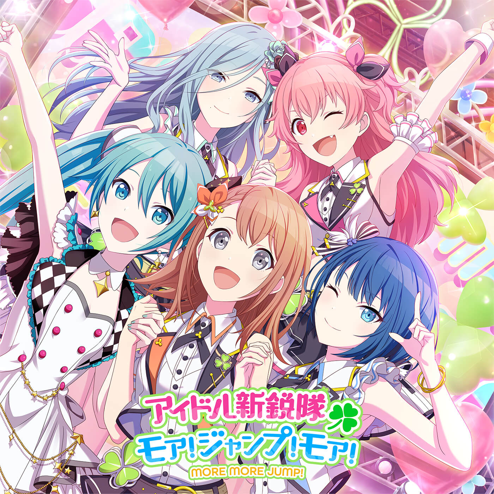
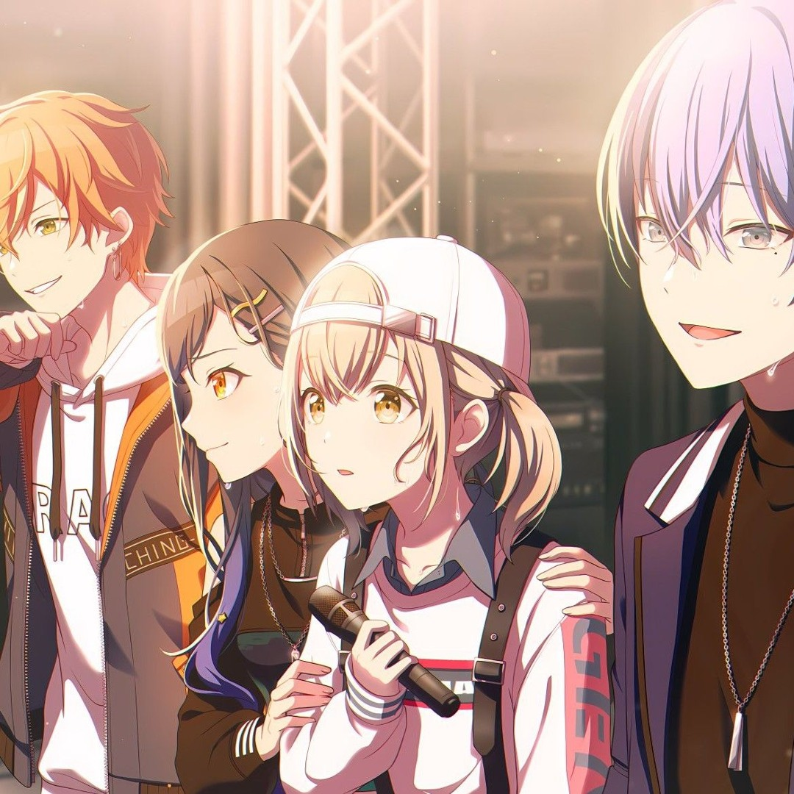
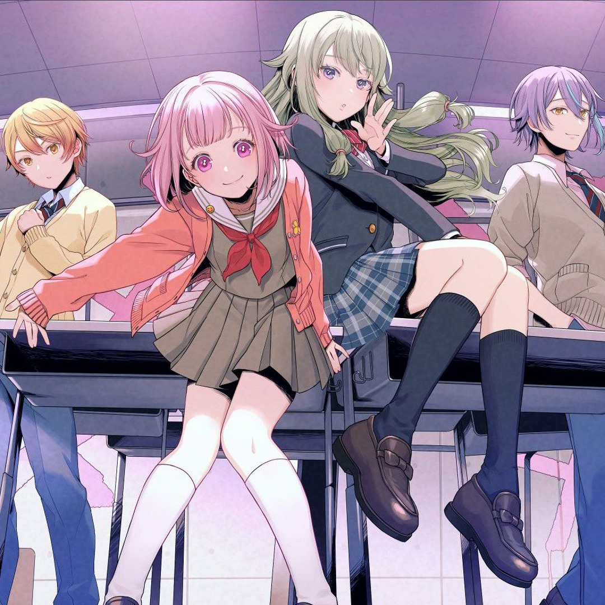
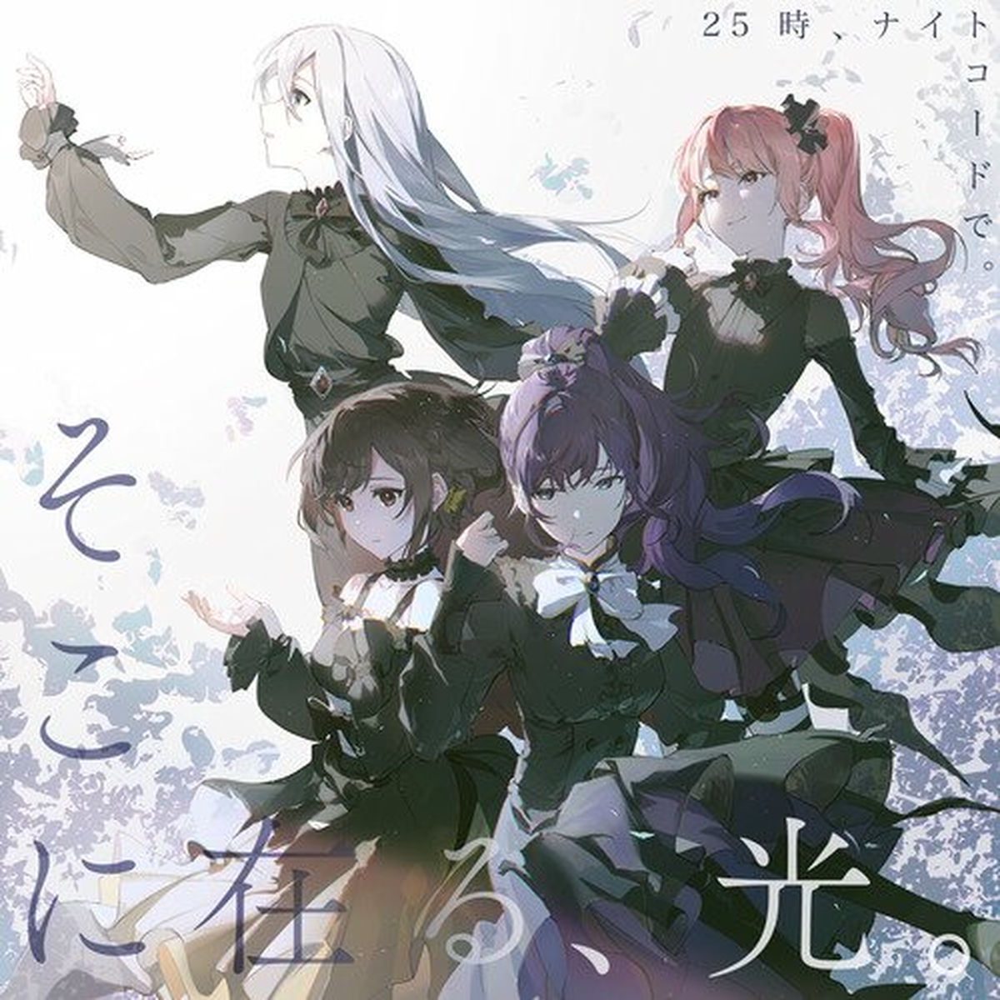
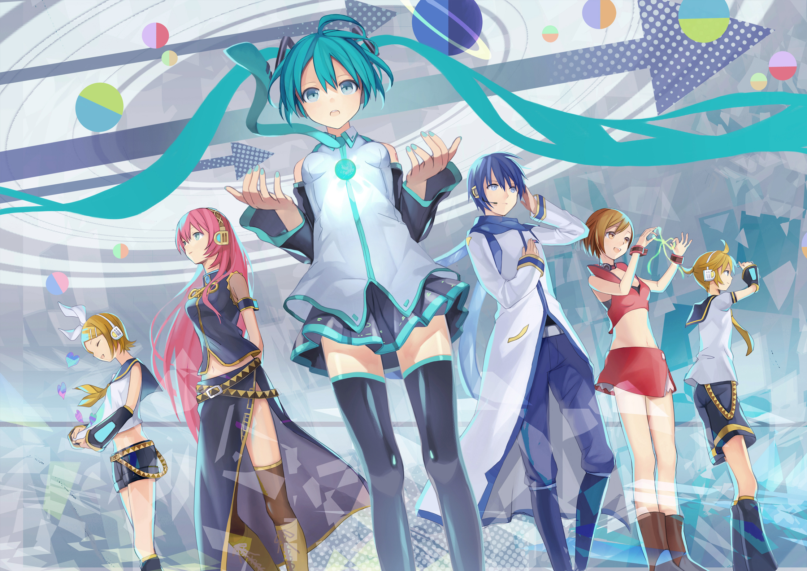

BAND / FRIENDSHIP
Leo/need
Four childhood friends reconnect through music and form a band.
Members: Ichika, Saki, Honami & Shiho
02 / THE CHARACTERS
Five groups, their own songs, and Virtual Singers who help guide them.

FIND YOUR FAVOURITE
Each band has its own musical style, story and colour palette.

Four childhood friends reconnect through music and form a band.
Members: Ichika, Saki, Honami & Shiho

A group of aspiring idols who want to bring hope to their fans.
Members: Minori, Haruka, Airi & Skizuku

Two duos come together to aim for a legendary music event.
Members: Kohane, An, Akito & Toya

A colourful troupe puts on shows to make people smile.
Members: Tsukasa, Emu, Nene & Rui

Four creators connect online through music and their feelings.
Members: Kanade, Mafuyu, Ena & Mizuki
THE VIRTUAL SINGERS
Hatsune Miku, Kagamine Rin, Kagamine Len, Megurine Luka, MEIKO and KAITO appear throughout the game.
Their design and roles can differ between Sekai worlds.
